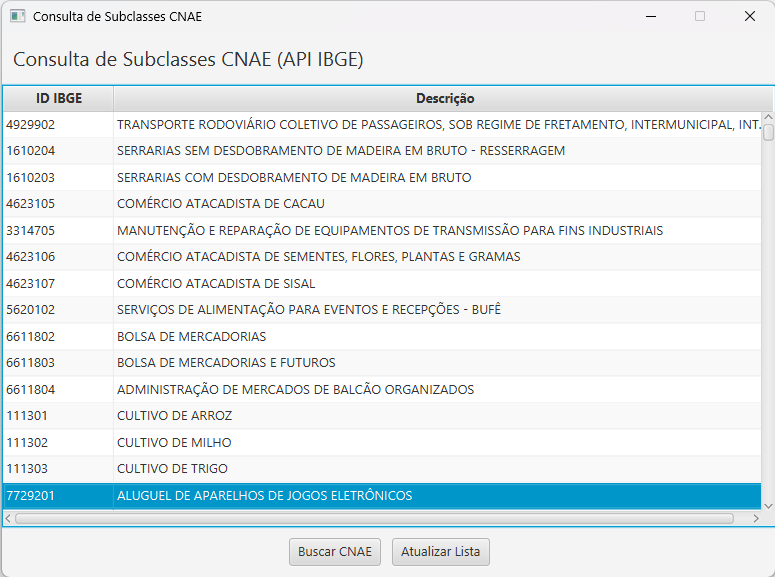
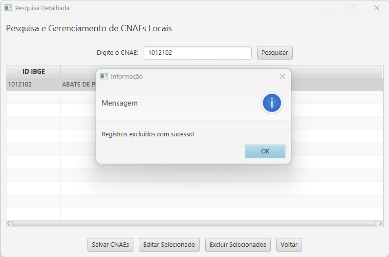
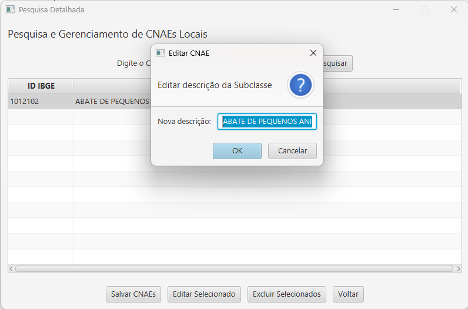
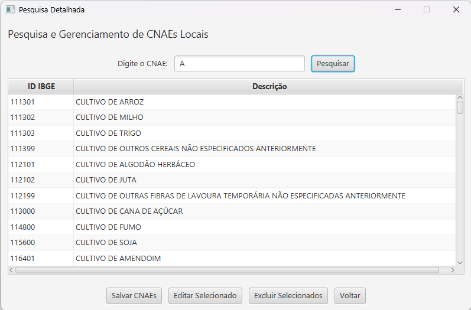

1. TELA INICIAL (Consulta de CNAE da API IBGE)
Esta é a tela de entrada do sistema. Ela lista todas as Subclasses CNAE disponíveis no catálogo da API do IBGE, atuando como a visão principal dos dados brutos e permitindo o acesso às funções de gerenciamento local.
Visão Geral: Listagem completa dos registros obtidos da API (tabela `tableCnaes`).
1.1. Lista de Registros da API
A tabela exibe a lista de CNAE, com as colunas "ID IBGE" e "Descrição". Estes dados são lidos diretamente da API e não representam o conteúdo do banco de dados local.
1.2. Ações na Tela Inicial
- Botão Atualizar Lista: Aciona a função `buscarSubclassesAPI` para recarregar a lista de CNAE diretamente da API do IBGE.
- Botão Buscar CNAE: Aciona a função `abrirPesquisaDetalhada`, direcionando para a Seção 2 para interagir com os dados locais (pesquisar, salvar, alterar ou excluir um registro).
2. PESQUISA DETALHADA (Gerenciamento de CNAEs Locais)
A tela de Pesquisa Detalhada concentra as operações de CRUD (Criação, Leitura, Atualização e Exclusão), focando apenas nos registros já persistidos no banco de dados local.
2.1. Pesquisar e Consultar Registros (Banco Local)
Utilize o campo 'Digite o CNAE' para filtrar os resultados. Ao clicar em "Pesquisar", o sistema lista os CNAE que correspondem ao filtro, buscando-os exclusivamente no banco de dados local.
Os registros listados (após a busca) servem como base para as demais funções de CRUD local.
2.2. Excluir CNAE Selecionado (Confirmação)
O sistema permite a exclusão de apenas **um registro por vez**. Após selecionar **um CNAE** na tabela e clicar em "Excluir Selecionado", o sistema solicita a confirmação do usuário. Aprovada a ação, o registro selecionado é removido do banco de dados local, e a mensagem de sucesso ilustrada é exibida.
Mensagem de Sucesso Após Exclusão:
O diálogo de "Sim/Não" para confirmação da exclusão é obrigatório antes da remoção do registro selecionado.
2.3. Editar CNAE Selecionado
Ao selecionar um CNAE e clicar no botão "Editar Selecionado", uma caixa de diálogo é aberta, permitindo a modificação da descrição da Subclasse, como visto abaixo.
Diálogo de Edição de Descrição:
A modificação é salva no banco de dados local ao clicar em "OK" no diálogo de edição.
2.4. Salvar/Incluir CNAE (Banco Local)
O botão "Salvar CNAEs" (localizado na parte inferior da tela de pesquisa) é utilizado para persistir dados no banco de dados local, seja um CNAE importado ou um registro editado. A imagem a seguir mostra uma lista de resultados filtrados antes de serem potencialmente salvos.
Resultados da Pesquisa Filtrados por "A":
O fluxo permite consolidar novos dados (ou importações) no banco de dados local para gerenciamento via CRUD.